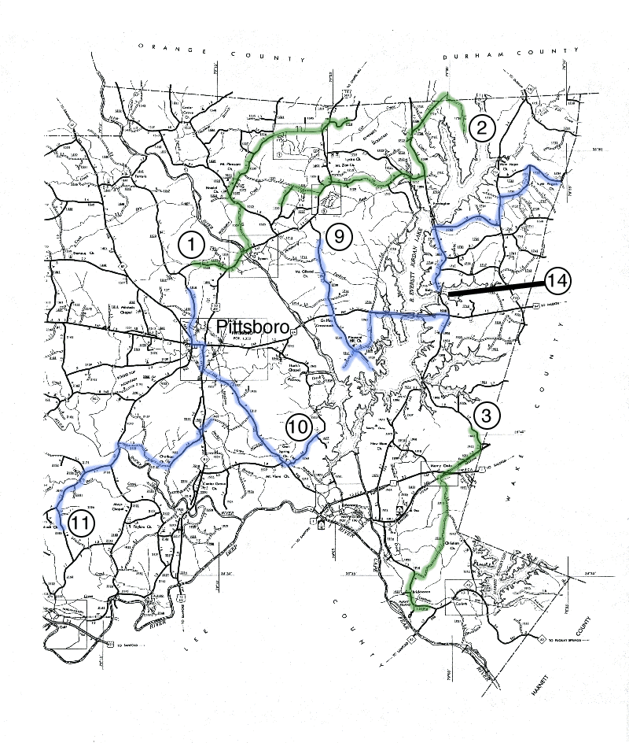
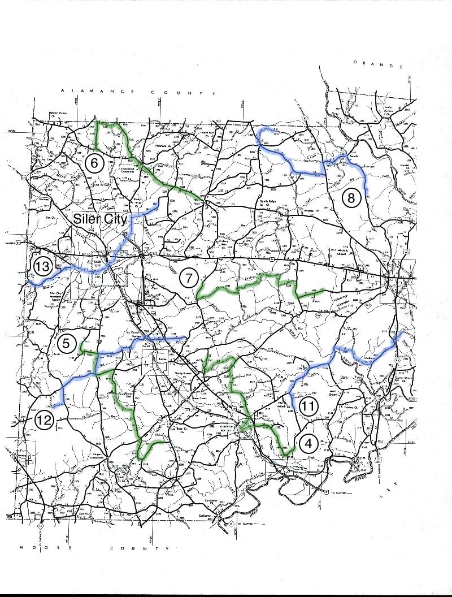

 
Starting point: Russell Chapel Road (County Road 1520) 1.4 miles west of US 15-50 (turn left 3.1 miles north of Pittsboro center).
Route: go east on Russell Chapel Road 1.4 miles to US 15-501, turn left on US 15-501, cross the Haw River and turn left on Moore Mountain Road (CR 1524), proceed 1.9 miles to River Road (CR1525), turn left on River Road and go 0.6 miles, turn right on Manns Chapel Road (CR 1532), and continue until your have completed 20 stops (near US 15-501).
Starting point: Old Hope Valley Farm Road (CR 1728) on Mason Neck at gate 1.0 miles south of Farrington Mill Road near the county line (as far south as you can go)
Route: go north on Old Hope Valley Farm Road to Farrington Mill Road, turn left on Farrington Mill Road (CR 1109) and continue 1.9 miles to Mount Carmel Church Road (CR 1008), turn left and proceed southward about 2.3 miles, turn right on Lystra Road and after 1.0 miles turn left on Jack Bennett Road (CR 1717), continue all the way to US 15-501, turn left on US 15-501 for about 0.7 miles, turn right on Andrews Store Road (CR 1528) and continue until you have completed 20 stops.
Starting point: Farrington Road 1.1 miles north of the junction with Old US 1 (Hillsborough Street) at Bonsal on the county line.
Route: go south on Farrington Road (CR 1008) to Old US 1, turn right and continue to Merry Oaks center, turn left on Christian Church Road (CR 1912), continue 1.6 miles and turn right on Moncure Flat Road (CR 1924), continue over 3 miles all the way to NC 42, turn left on NC 42 through Brickhaven until you have completed 20 stops.
Starting point: Henry Oldham Road (CR 2142) 0.7 miles northeast of junction with Lukes Church Road (CR 2135) north of Gulf on the Deep River.
Route: go south on Henry Oldham Road (CR 2142), turn right on Lukes Church Road (CR 2135), continue about 3 miles (across US 421 bypass) to Goldston center, turn right on US 421 and then immediately turn right again on Pittsboro Road (CR 1010), in about 1 mile (back across US 421 bypass) turn left on Verne Phillips Road (CR 2189), after 1.4 miles turn left on Campbell Road (CR 2129), in 0.5 miles turn right on Mark Willett Road (CR 2181) and go 1.3 miles to NC 902, turn right on NC 902 and go 0.7 miles before turning left on Ralph Moore Road (CR 2178), after 2.2 miles turn right on Dean Beavers Road (CR 2180) and continue until you have completed 20 stops (assuming you are not lost!).
Starting point: Joe Brown Road (CR 1150) 0.5 miles south of junction with Oakley Church Road (CR 1151).
Route: go south and east on Joe Brown Road to Siler City-Glendon Road (CR 1100), turn right and go 1.3 miles to Bonlee-Bennett Road (CR 1005), turn left and proceed 1.1 miles to Palmer Church Road (CR 1136), turn right and continue to and through Providence Church Rd. After Providence Church Rd., Palmer Church Rd. become Herb Beavers Rd. Follow it all the way (4.4 miles) to a T-junction with Edwards Hill Church Rd (CR 1141), turn right and proceed 4.3 miles south. When this road crosses NC 902, it becomes Tom Hancock Rd. Follow Tom Hancock Rd. to Vander-Oldham Road (CR 2312). If you haven’t completed 20 stops, then turn left and continue until you have completed 20 stops.
Starting point: Silk Hope-Liberty Road (CR 1346) 0.4 miles east of junction with Pete Thomas Road (CR 1353) about 5 miles due north of Siler City.
Route: go west on Silk Hope-Liberty Road a short way and turn right on Sam Lowe Road (CR 1353) (Pete Thomas Road in DeLorme Atlas), proceed north 1.5 miles almost to the county line and turn right on Flint Ridge Road (CR 1351), continue east and southeast all the way back to Silk Hope-Liberty Road (CR 1346), turn left here and continue through Silk Hope, until you have completed 20 stops.
Starting point: Rives Chapel Road 1.7 miles south of US 64 about 5 miles east of Siler City.
Route: go south on Rives Chapel Road about 1.0 mile to Carolina Hill Road (CR 2168), turn left and continue 2.6 miles to Pleasant Hill Church Road (CR 1506), turn left and in less than 0.5 miles turn right on Jay Shambley Road (CR 2167), continue 3.0 miles to Hadley Mill Road (2165), turn right and proceed 0.7 miles to Elmer Keck Road (CR 2166), turn left and go 1.1 miles to Alex Cockman Road (CR 2163), turn right and go 1.0 miles to Alston Chapel Road (CR 2159), turn left and continue until you have completed 20 stops.
Starting point: Mt. Olive Church Road (County Road 1520) 2.9 miles south of Terrells just south of a chapel marked on the county road map (this location is about 5.4 miles north of US 64 on the west side of Pittsboro – take Old NC 87 which becomes Mt. Olive Church Road about 3.3 miles north of Pittsboro).
Route: go north on Mt. Olive Church Road all the way to Terrells, turn left on Chicken Bridge Road (CR 1545) and after 0.9 miles keep right on Mann Road (CR 1546) until you reach NC 87, turn left on NC 87 and after 0.7 miles turn right on Big Meadow Road (CR 1549), continue about 4.7 miles (0.4 miles past Van Thomas Road), then turn right on Otis Johnson Road (CR 1552) and continue until you have competed 20 stops.
Starting point: Mount Gilead Church Road (CR 1700) 0.7 miles south of US 15-501 northeast of Bynum.
Route: go south on Mount Gilead Church Road (CR 1700) all the way to Griffins Crossroads, continue straight across US 64 and continue straight into Vista Point Recreation Area (Jordan Lake) as far as possible. At this point, backtrack to the junction with Seaforth Road (CR1941) without making any stops. Turn southwest (to the left as you return from Vista Point) on Seaforth Road (CR 1941) and resume making stops as far as you can go. Once again, backtrack to the junction of Seaforth Road and North Pea Ridge Road without making stops. Then proceed northeast on Seaforth Road (straight ahead this time) and resume making stops. Continue about 2.4 miles to US 64, turn right (east) on US 64 and continue until you have made 20 stops. If stops are not safe on US 64, continue across the lake and turn right on Farrington Road (CR 1008) and proceed south toward Ebenezer Church Recreation Area until you have completed your stops.
Starting point: Gum Springs Church Road (CR 1939) at the junction with Clark Poe Road (CR 1931) – also 1.8 miles northeast of the junction with Moncure-Pittsboro Road (CR 1012) – about 5 miles southeast of Pittsboro.
Route: go southwest on Gum Springs Church Road (CR 1939) to Moncure-Pittsboro Road (CR 1012), turn right and continue all the way to US 15-501/NC 87, turn right and proceed to Pittsboro center, go around the courthouse and head west on US 64, after about 0.6 miles turn right on NC 87 and soon thereafter branch right on Old NC 87 (CR 1516), continue until you have competed 20 stops.
Starting point: Reno Sharps Store Road (CR 2188) 1.0 mile south of Goldston-Pittsboro Road (CR 1010) just over 2 miles east of Goldston.
Route: go north on Reno Sharps Store Road (CR 2188) to Goldston-Pittsboro Road (CR 1010), turn right and continue about 3.8 miles until you cross the Rocky River, soon afterward turn right on Holly Ridge Road (CR 2158), after 1.0 mile turn right on Pete Roberson Road (CR 2157), continue 1.6 miles and turn left on Chatham Church Road (CR 1953), after 1.8 miles turn left on Old Sanford Road and then in 0.2 miles turn right on Charlie Brooks Road (CR 1969), cross US 15-501 and continue on Charlie Brooks Road until you have made 20 stops.
Starting point: Sunny Slope Road (CR 1150) 0.8 miles east of Airport Road (CR 1100) about 3.5 miles north of Bennett and Bonlee-Bennett Road.
Route: go south and east on Sunny Slope Road to Devil’s Tramping Ground Road (CR 1100), turn left and proceed 1.0 mile to Bonlee-Bennett Road (CR1005), turn right and go 2.1 miles to Siler City-Glendon Road (CR 1006), turn left and go 1.2 miles (this stretch repeats part of Route 5 but your stops are not likely to fall in the same places), turn right on Mount Vernon Spring Road (CR 1134), continue all the way to Mount Vernon Springs center, cross Old US 421 (the road becomes Foust Road) and immediately turn right on Buck Gunter Road (CR 2119), continue eastward straight across US 421 until you have completed 20 stops (if necessary turn left on Ike Brooks Road CR 2120).
Starting point: Coleridge Road (CR1102) (Blood Run Road in DeLorme Atlas) at the junction with Moons Chapel Road near the county line west of Siler City (6 miles west of the first stoplight in Siler City)
Route: go east on Coleridge Road (CR 1102) to Old US 64 (now CR 1107) west of Siler City, turn right and proceed to the center of Siler City (on West Third Street after a bend to the left), turn left on US 421 (North Second Avenue), after two blocks turn right onto Martin Luther King Boulevard, follow a bend to the left, cross US 64, and then head northeast out of Siler City on Snow Camp Road (CR 1004), after about 2.5 miles turn right on Jesse Bridges Road (CR 1332) and continue until you have made 20 stops.
Starting point: south end of the causeway over White Oak Creek on Farrington Road (CR 1008) about 0.9 miles north of US 64.
Route: go north on Farrington Road a little over 3.0 miles to Martha’s Chapel Road, turn right and continue to NC 751, turn left and go 1.1 miles to Mt. Pisgah Church Road (CR 1736), turn right and proceed 2.0 miles to a T-junction with New Hope Church Road, turn right and continue until you have completed 20 stops (hopefully before you reach the county line!).